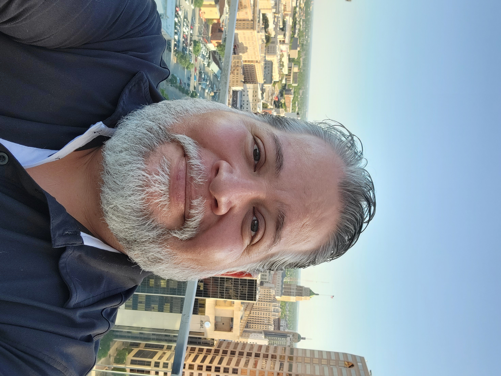

Jerry Portillo

Summary
I am a highly qualified IT professional with a Bachelor of Science degree in Cyber Security, holding certifications in CompTIA A+, Security+, and Oracle Cloud Infrastructure Associate. With a proven track record in system administration and IT support, I bring expertise in Microsoft Office 365, remote support tools, virtual healthcare devices, and application engineering.
My experience as a Tier III Application HelpDesk Engineer for MHS Video Connect showcases my skills in user account management, root cause analysis, and utilization of development and monitoring tools. I am dedicated to driving efficient IT operations and possess strong problem-solving abilities.
Education
- Hallmark University, San Antonio Graduation – 12/2018
- Bachelor of Science – Cyber Security
- GPA – 3.97 Summa Cum Laude
Work Experience
-
Application Engineer/MHS VH Tier III Engineer - Leidos
Nov 2023-Present
- TeleCritical Care Tier III Engineer on the operational side for MHS Virtual Health Support.
- MHS Video Connect Tier III Engineer for operational side of the DevOps team for Leidos LPDH group.
- User account management using Active Directory, and IAS.
- Utilized PowerShell and Git Bash to run script for user account creation, modification, and deletion.
- Root cause analysis (RCA) to determine issues at the Tier III level for MHS Video Connect.
- Recognize when a MIM (Major Incident Management) team should be created and participate to completion.
- Used development and monitoring tools such as: Splunk, Vault, Consul, Rancher UI, MongoDB, GitLab, Jira, Confluence, Vector.
- Assisted customers in troubleshooting issues by reaching out to them to investigate technical issues with the MHS Video Connect Virtual Care Manager site.
- Created knowledge articles and uploaded them to Service Now ITSM as well as Confluence.
- Assisted the Developer team at times with solutions to problems affecting the enterprise in regard to MHS Video Connect.
- Created Jira tickets to track project workload.
- Assisted in Team onboarding and training for new employees.
- Ran Team Scrum meeting.
Programmer/Developer- Production Application Support Specialist - Insight Global
Sep 2022- Nov 2022
- Provide day-to-day leadership in a Product Support Manager role between our internal lines of business and the Digital banking team for API Major Incident Management (MIM) support and project delivery processes.
- Collaborate with various Retail Banking lines of business including Digital Banking API/Digital Services API support, as well as peer technology groups.
- Manage Major Incident Management calls relating to escalated Change Requests/Incidents that support Retail Banking API’s.
- Work with other departments in IT to resolve commercial client API issues, including tiers 1,2, and 3, as well as, the infrastructure team to rapidly analyze and understand impact to commercial clients and customers and articulate those findings to senior technology leadership and/or technology partners via root cause analyses.
- Proactive Monitor of API’s in real time using Splunk dashboard to mitigate possible impacts to clients and customers.
- Investigate API issues using Splunk logs to assist in determining root cause for impacts to services, clients, or customers.
- Gather data analytic information to generate escalation impact reports for MIM follow up.
- Perform ‘5 Why’s' root cause analysis to determine the underlying cause to escalated issues, and to document next steps to mitigate those issues in the future.
- Maintain the confidentiality of our customers.
- Perform other duties as required.
Application Engineer 1, MHSVC Tier III Engineer - Athena Consulting Group
Jan 2022 - Aug 2022
- MHS Video Connect Tier III Engineer for operational side of the DevOps team for Leidos LPDH group.
- User account management using Active Directory, and IAS.
- Utilized PowerShell and Git Bash to run script for user account creation, modification, and deletion.
- Root cause analysis (RCA) to determine issues at the Tier III level for MHS Video Connect.
- Recognize when a MIM (Major Incident Management) team should be created and participate to completion.
- Used development and monitoring tools such as: Splunk, Vault, Consul, Rancher UI, MongoDB, GitLab, Jira, Confluence, Vector.
- Assisted customers in troubleshooting issues by reaching out to them to investigate technical issues with the MHS Video Connect Virtual Care Manager site.
- Created knowledge articles and uploaded them to ServiceNow ITSM as well as Confluence.
- Assisted the Developer team at times with solutions to problems affecting the enterprise in regard to MHS Video Connect.
- Created Jira tickets to track project workload.
- Assisted in Team onboarding and training for new employees.
- Ran Team Scrum meeting.
- Help Desk POC for ACG staff assisting Microsoft Office 365 administration.
Clinical Systems Technician / System Administrator / IT Analyst - B.E.A.T. LLC
Jul. 2019 to Dec. 2021
- Facilitate EHR CHCS, Essentris, also Adobe Connect access for providers for remote virtual healthcare.
- Utilize Active Directory & Group Policy to modify, manage, and automate enterprise systems and accounts.
- DEPO/DEE Entitlement Manager (MS Exchange/Office 365 administration).
- GlobalMed CAS Technician for Virtual Medical Center (VMC) (brought all CAS in San Antonio area up to Windows v1909 for healthcare management system modernization.
- Managing Vendor and customer relationships for successful operations.
- Develop SOP’s and efficiency improvements.
- Support customers by providing data on expansion, usage, and efficiency.
- Adobe Connect Administrator (Account creation and deletion, assigning roles and permissions).
- JKO Learning Administrator (training assignment and verification of completion).
- Process DD2875 and SAAR-N forms for access requests.
- ITSM’s used: Remedy, ServiceNow.
- Perform installations, integrations, configurations, upgrades, troubleshooting, and performance updates for multiple products.
- Training end-users on the proper use of the system.
- Assists in building robust systems focusing on long-term and ongoing maintenance and support.
- Support and respond to service / network outages impacting medical center operations.
Desktop Support Tier 1 Analyst - Apex Systems / Perspecta
Aug. 2018 to Jul. 2019
- Generates incidents for issues using Remedy ITSM - Logs, tickets, and tracks incidents.
- Support includes remote installation of software, troubleshooting software and hardware issues.
- Bomgar, DameWare Mini Remote Control, Remote Desktop Connections.
Skills
System Administration:
- Microsoft Office 365
- MHS Video Connect
- Adobe Connect
- Joint Knowledge Online (JKO)
- DEPO/DEE Entitlement Manager
Helpdesk Support:
- Windows
- Word
- Excel
- PowerPoint
- Outlook
- Teams
- PowerShell
- GVS2
- Active Directory
- Essentris
- CHCS
- Adobe Connect
- MHS Genesis
- MHS Video Connect
- Hardware imaging and deployment
- PC Software troubleshooting
- Microsoft Office 365
- Linux
Remote Support
- Bomgar
- DameWare
- Remote Dekstop
- AnyConnect
- AVHE Desktop
- Citrix Workspace
Virtual Health Care Device Technician:
- GlobalMed CAS
- Virtual Health laptop repair
- Reimaging
- Mobile Broadband Kit (MBK)
- Executive Broadband Kit (EBK)
Application Engineer tools used:
- Splunk
- Vault
- Consul
- Rancher UI
- MongoDB
- GitLab
- Jira
- Confluence
- Vector
Certifications
- CompTIA A+ - Active February 22, 2017
- CompTIA Security+ - Active August 24, 2017
- Oracle Cloud Infrastructure Associate - Active October 31, 2021
Achievements
- 5 out of 5 rating end of year evalaution with B.E.A.T. LLC
- Supported the Virtual Medical Center while working with B.E.A.T. LLC by maintaining hardware, system administration, data analytics, virtual medical device maintenance. The VMC was recently awarded the 2023 Innovation Award. Though I was not with them in 2023, I did support them prior to that (2019-2022).
- Member of the MHS Video Connect Team who were winners of the FORUM, formerly FedHealthIT Award.
Other